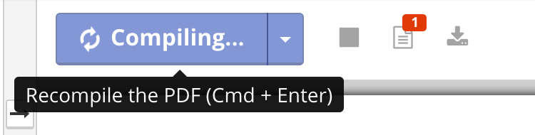

The first good example is the fitbit mobile iOS application. The purpose of this interface is to display to users their health information for the day; daily steps, number of floors climbed, distance walked/run, calories burnt, number of active minutes, number of hours of sleep, consecutive days of exercise, and water consumption are displayed on the home page. This interface takes advantage of metaphorical consistency in order to create a system that speaks the user’s language and is thus easy to navigate. As a result, the app is learnable, memorable, has a low error rate, and is subjectively pleasing. When one opens the app, the lack of extra information on the home screen is noticed. This makes the interface immediately pleasing to the eye. However, not only does the app omit extra information, but the cues it provides users employs metaphorical consistency. For instance, an icon of feet represent the number of steps, the stair icon represents the number of floors climbed, the moon icon represents the number of hours slept, etc. Because of this consistency in representation, majority of users are able to figure out very quickly what the information means and how to navigate the app. Additionally, when the icons are pressed, one is brought to a page that shows weekly statistics of the respective health measure, which has a clear back arrow to get to the main page. Because of these characteristics, the app is easy to navigate and thus incredibly learnable. Being easy to navigate and learnable is important because it is more difficult to make errors and users are likely to remember how to use the interface the next time they open the app.
The second good example is the website shareLaTex.com, which is a website that supports online LaTex use. Instead of using desktop software to create and edit LaTeX project, users can do so online. The page where users edit their projects is an example of a good user interface because it provides consistent feedback which informs the state the system. Additionally, similar to the fitbit app, the icons have metaphorical consistency, which facilitates navigation. These characteristics make the interface efficient and learnable and thus an example of good user interface design. The application gives use of good feedback in the following ways: when the mouse hovers over the icons, descriptions of what the icon does shows up and the icon’s color changes. This eliminates the ambiguity of people wondering which icon does what and makes it easy to learn. Furthering the learnability, icons such as a pencil to edit, trash can to delete files, and a document button to create a new file give the interface consistency with other interfaces. Additionally, when the user presses the “recompile” button, the button turns into a lighter shade of blue and arrows spin demonstrating that the system is working on displaying the document. It is useful for users to have this information so that they do not get frustrated as they wonder if the system is compiling their work. Additionally, while being easy to learn, the system also caters to experienced users by having a keyboard shortcut to compiling. Because of this clear, consistent system of feedback, the shareLaTex website is learnable while also efficient in its support of shortcuts.
The first example of a bad user interface is the amazon website where customers add the item to their cart. In addition to relying on color to portray information to users, it includes extra information that the user does not need when checking out the item. These features make it difficult to learn and to remember how to operate the interface. At the top right corner, the list price of the book (as opposed to online price) and the percentage saved is displayed. It also says, “In Stock. Gift wrap available”. It attempts to draw users to the fact that it is in stock by making this information green, which cannot be relied upon because of colorblind users. This information is superfluous to the user who is trying to find the option to proceed to checkout; they are already convinced to buy the product. Under the “Add to cart” button it informs users of the option they need to select in order to have the product tomorrow. In an attempt to sell customers on their ability to quickly ship the product, the interface displays the information too soon because at this point, they are not selecting checkout options. Giving this information so early has little use because users will likely forget it by the time they move on to the next page. The extra information makes it harder to find the necessary information: how to checkout. Therefore, the interface is not only hard to learn to use, but hard to remember how to use.
The second example of bad user interface is the chrome web store. This interface is for chrome users who want to extensions and themes to their browser. However, it is very confusing to learn to use because it has low consistency; the language it uses is ambiguous. Due to this ambiguity, it relies on user memory of these language the next time they use the store, which is not reliable. On the sidebar, the options for different categories of products is displayed: apps, games, extensions, and themes. However, underneath it has two options: chrome applications, and website. The distinction between app and chrome app is unclear; aren’t they all chrome apps? What is a non-chrome app on the chrome store? Similarly, what is the difference between a game and an app; isn’t a game an app? What is a website as opposed to a chrome app on the browser? There is low consistency because there are multiple interpretations of the terminology the interface uses; therefore, users have to spend time habituating to this language which decreases the learnability. The interface also has to rely on user memory of this information the next time they use it, which is incredibly unreliable. Relying on memory also increases the vulnerability of users to making errors when operating the interface. Because of the high error rate, low learnability, and low consistency this is an example of poor user interface design.